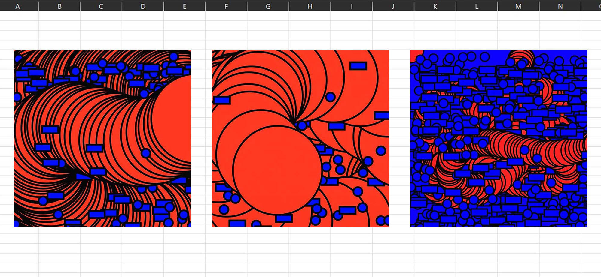
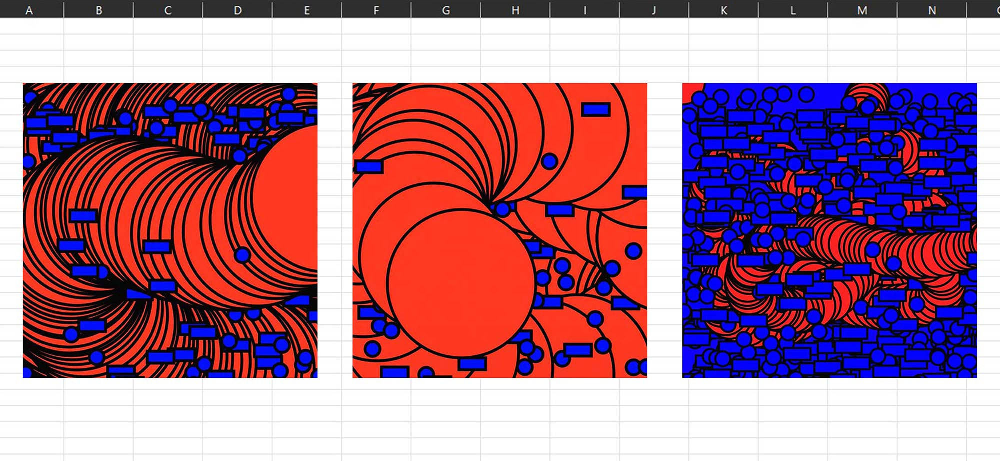

Bricolage numérique est un projet invitant à explorer les outils numériques libres, dans le but de s’aventurer vers de nouveaux supports et d’établir de nouvelles approches. **Bricolage Numérique = S’aventurer à travers un support numérique libre où le designer bricoleur se confronte et provoque des imprévus graphiques, amenant une part d’incertitude. Il requestionne les règles traditionnelles par un détournement et un tâtonnement créatif. Mon terrain expérimental s’est tourné vers le codage, à partir de l’outil libre Processing. J’ai pu m’amuser avec l’interactivité que peut offrir cette pratique, en créant un rapport direct entre le visuel et l’utilisateur. La mobilité des formes et l’interactivité modifient le visuel et proposent une large possibilité d’images.
 
